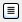

This option menu lists all the parents in the current path, as well as recent locations (the path history). You can use this option menu to select the directory whose contents are displayed in the area below. The latest directory choice is displayed as the selected item in this menu.
These buttons allow you to navigate through the history of the directory choices made, navigate up to the parent directory, or create a new subdirectory (folder) in the current directory.
| Set the path to the directory above the current directory (the parent directory). | |
| Set the path to the previous value in the path history. | |
| Set the path to the next value in the path history. | |

|
Create a new folder in the current location. |
These buttons allow you to switch betwen a list view and a view that provides details on the files and directories listed.

|
Show just the file names in a multicolumn, horizontally scrolling format. |
|  | Show the file details (name, size, type, date modified) in a tabular, vertically scrolling format. To sort the files, click in the heading of the column you want to sort by. |
This area contains labeled icons for the standard locations for a file. When you select one of these items, the path option menu is updated and the list of files and folders is updated.
Set the path to your home directory. This is $HOME on Linux
(usually /home/username) and Mac
(/Users/username, and %HOME% on Windows
(C:Users\username).
|
|
| Set the path to the defined custom directory. By default this directory is the Maestro startup directory, but it can be set in the Preferences panel, under General – Directories. | |
| Set the path to the Maestro working directory. | |
| Windows only | |
| Set the path to My Computer. | |
| Set the path to My Network Places. | |
| Set the path to the Desktop. | |
| Set the path to My Documents. | |
This area lists the files and directories (folders) in the current choice of directory.
- To select multiple items, use shift-click and control-click.
- To scroll to files or folders that begin with a particular character, press the key for that character. The first file or folder beginning with that character is selected (and anything else is deselected).
- To sort the files, click in the heading of the column you want to sort by.
This text box displays the name of the files or folders chosen in the current directory. Multiple items are listed in quotes, separated by a space. You can type in the name of a file in this directory, with either an absolute or a relative path; and you can type in a path and press ENTER to change directories.
The items on this option menu limit the display of the directory contents to files of the specified type. For import of files, the option menu includes a Custom File Filter item, which opens a dialog box so that you can specify a filter to filter the list of files displayed; and a Common item, which filters on the common structure file formats (Maestro, PDB, SD). The standard metacharacters for file selection on Unix are supported in this filter (such as * for zero or more characters, ? for one character, and square brackets enclosing specific characters to match, e.g. [abc]).
This button opens the selected file or files and dismisses the file selector.